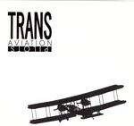

Home Artist links Label link

Romislokus - Transaviation Pilots
| Artist: | Romislokus |
| Title: | Transaviation Pilots |
| Label: | Independent |
| Length(s): | 40 minutes |
| Year(s) of release: | 2004 |
| Month of review: | [07/2004] |
Line up
Yuri Smolnikov - guitar, vocal
Mike Solo - lead guitar
Evgeniy Gorelov - keyboards
Misha Brovarnik - bass
Jim Motto - drums
Tracks
| 1) | Trans Aviation Pilots |
|
| 2) | Take My Heart |
|
| 3) | Lucky Man |
|
| 4) | Just Dream |
|
| 5) | Come Tomorrow | 3.52
|
| 6) | Money |
|
| 7) | Loosing The Time |
|
| 8) | Being In Plastic Box |
|
| 9) | Computer, Moon |
|
| 10) | Rocking Time |
|
| 11) | In Flanders Fields |
|
| 12) | Dreg (video) |
|
Summary
The Russians with their fourth album. This one, and likely enough the others
too, are for sale at CD Street.
The music
Trans Aviation Pilots is Russian band Romislokus's fourth album, and could
be considered a more or less logical sequel to its predecessor All Day Home.
The album contains eleven songs which are mostly pop oriented with the
slightest of progressive influences. They could be best compared with Tony
Carey's solo material, although a bit less smooth. One might also consider
similarities to such progressive pop bands as Gazpacho, but Romislokus is
too uneventful to fully stand up in that comparison.
Come Tomorrow is a little different, less oriented towards the basic song
structure and with some twist in the use of both voice and instruments.
Money's use of tubular bells during the break has a nice flow to it.
Positive surprise is that the English vocals are quite expressive, often a
problem with non native speakers. They are rather accented though, and
grammatically the lyrics aren't exactly up to scratch either. Apart from
that the tracks in Russian (the album contains both tracks in Russian and in
English) do seem more appealing, well rounded, complete than those in
English.
As with the previous album, the band use only normal pop instruments
(barring the occasional cello), thus missing out on the somewhat ethnic feel
of the older material. I keep feeling that that ethnic feel was the earlier
band's main appeal.
Conclusion
Trans Aviation Pilots isn't a bad album, actually the tracks are sort of
decent. However, the tracks are mostly background music, whilst their vocal
nature would suggest otherwise. Only occasionally, with such changes as
mentioned before, does the music pull some attention to itself. These
moments are too few and far between to carry the album.
© Roberto Lambooy